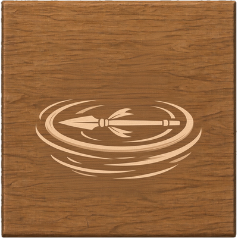
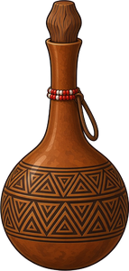

Amir
King of Africa
Bouwen
leeg
in je hand:
1,1
klik = neerzetten, klik op iets = kiezen, slepen = verplaatsen, Delete = weg
Level
Als tekst
Sandbox
zet neer wat je wilt testen, vlakke grond, geen automatische slangen
alsof ze je kwijt zijn: omdraaien en heen en weer, tot je hem weer uitzet
de eindbaas in wording, alleen het plaatje: vasthouden gaat door
een klein gouden aapje (honinggoud, blauw gezicht): het springt van de zijkant naar beneden, rent op je af en hapt. Een klap is dood
proof of concept: een vijand met zwaartekracht die op de hoogste laag uit de platformlijst landt (ook boven op een grotcel of terras) en daar heen en weer loopt. Zet er een grot of terras bij en spawn hem erboven. Een klap is dood
E wisselt: speer, mes, niets
een doel: raak hem en hij gloeit
een speer in de rotswand voor je uit, en een zegel dat hem losschiet: bukken
decor, het doek waait mee met de vlagen
een val: stapt een vijand erop, dan scheurt de grond onder hem open
voor alle zegels die er liggen, en de volgende
een lage doorgang, een zegel, een kamer en een spleet met een zegel erachter: raak het met een vlakke worp
een ravijn voor je uit met een zegel ervoor: stap erop en er komt steen omhoog
een stuk savanne dat hoger ligt, geen rots: met de lift komt er een zegel en een blok steen bij dat je erheen brengt
een dik savanneblok in de lucht met lucht eronder: loop eronderdoor, en bovenop kom je via de rand of een lift
100%
zet er gras en een struik bij om de storm te zien


0Choose your tribe
Look at each tribe's talents. Your choice is final once you join.
Talents
Level gehaald!
Laden
Pauze
Bared Teeth: de dreighouding
Geldt meteen, ook voor een vijand die al voor je staat. Afstanden in pixels,
tijden in seconden, moed per seconde (bij 1 valt hij aan).
100%
100%
25
Tempo vertraagt het hele spel, looptempo alleen Amir.
Je sprong houdt altijd dezelfde afstand, dus je blijft elk ravijn halen.
Formaat verandert alleen hoe groot alles getekend wordt.
Scherp tekent altijd op volle resolutie. Automatisch houdt het beeld scherp en
verlaagt de resolutie alleen als je toestel de beelden niet haalt. Soepel tekent lichter, voor
een trage machine.
Kies je talents
Updates
Je bent doodDruk op R om opnieuw te beginnen
Opdracht
📱
Draai je telefoon
Amir speelt liggend, met het scherm in de breedte.
Pijltjes om te rennen, pijl omhoog om te springen, Shift sprint, E speer, spatie stoot, spatie vasthouden werpt, langer vasthouden in een boog, Q drinken, R opnieuw